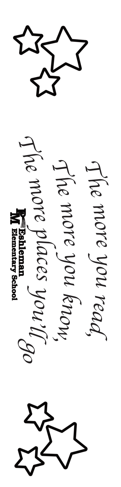
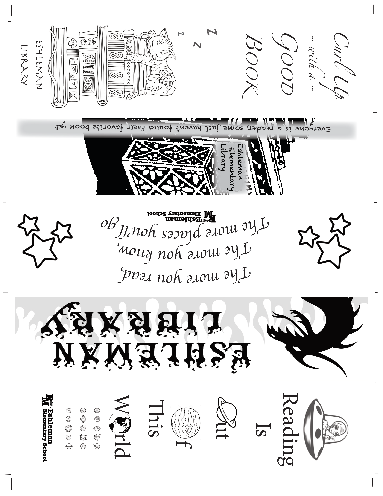

For the rough draft, I came up with five different design ideas for the bookmark. Only two of them made it past the concept stage.
The first one says, "The more you read, the more you know, the more places you'll go." The other design says, "Shoot for the moon. If you miss, you'll touch the stars."

Ultimately, this is the design I chose to be printed. Numerous copies of this bookmark were printed and given to the local elementary school.
I placed several stars on each side of the design because the school mascot was the Comets. I also placed the school logo at the bottom of the bookmark.

To print efficiently, a few of my classmates and I combined our bookmark designs onto one sheet, which was then printed and cut into individual bookmarks.